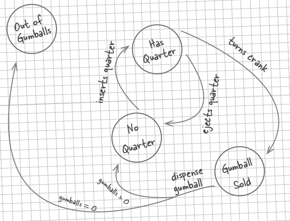
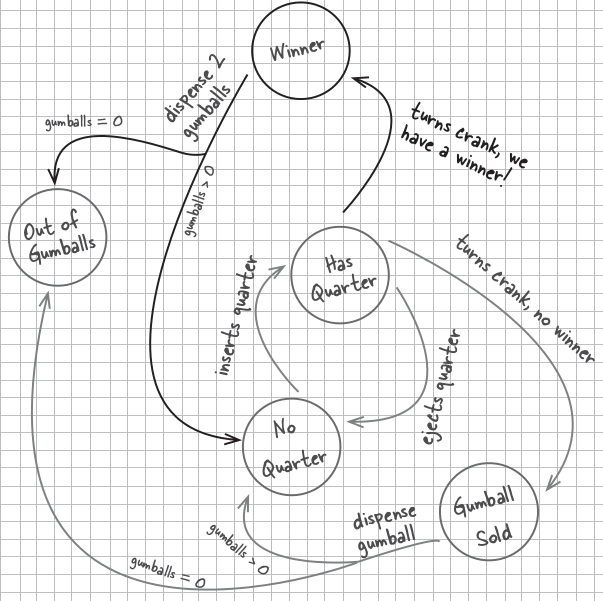
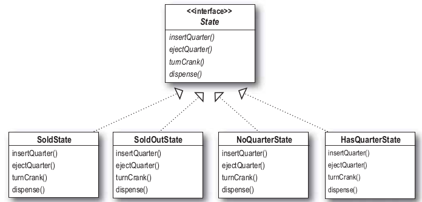

State
Diagrama de estados de Maquina de Dulces

- Cada circulo es un estado. Cada estado es un configuracion diferente de la máquina donde la máquina se comporta de manera diferente, y necesita alguna accion para pasar a otro estado.
- Cada linea es una transicion de un estado a otro, osea la acción que ocaciona el cambio de estado
State
Pasamos el diagrama de estados a código
Definimos una variable de instancia para mantener el estado, y a cada estado le asignamos un valor
Luego mapeamos todas las acciones a métodos
Lo mismo habria que hacer con el resto de las acciones o transiciones, de un estado a otro
ejectQuarter(), turnCrank(), dispense()
State
Implementacion
Veamos como queda la implementacion de la clase
State
Implementacion
Finalmente una clase test
State
Nuevos requerimientos
Ahora cada vez que giramos la rueda tenemos 10% de posibilidades de sacar 2 bolas
Esto hace que tengamos que agregar un nuevo estado WINNERademas de tocar el código de todas las transiciones para que tengan en cuenta el nuevo estado
Recordemos que cada método era una serie de condicionales que se fijaba el estado y de acuerdo a eso hacia algo
Características del diseño
- No esta adhiriendo al principio que dice: las clases tiene que estar abiertas para la extensión pero cerradas para la modificación.
- No encapsulamos lo que varia
State
Diagrama de estado para los nuevos requerimientos

State
Nuevo Diseño
Vamos a refactorizar el código porque el actual es difícil de extender y mantener.
Vamos a encapsular los objetos estado en su propia clase y se va a delegar al estado actual cuando una acción ocurra.
- Definimos una interface State que contiene un método por cada accion en la maquina de bolas de dulce.
- Después vamos a implementar una clase State para cada estado de la máquina. Estas clases van a ser responsables del comportamiento de la maquina cuando este en uno de esos estados.
- Finalmente vamos a sacar todo el código condicional y delegar a la clase estado hacer el trabajo por nosotros.
State
Nuevo Diseño
El diagrama de clases quedaría asi

No aparece el estado WinnerState porque primero refactorizamos y después se lo agregamos
State
Implementación
La interfaz State quedaria así:
Implementamos una de las clases concretas state
State
Implementación
En el constructor recibimos la referencia de GumballMachine, y la guardamos en una variable de instancia
Cuando alquilen inserta un moneda, imprimimos que la moneda fue aceptada y cambiamos el estado de la máquina a HasQuarterState
Estamos implementado los comportamientos en el estado que estamos. En algunos casos la acción hace que la maquina vaya a otro estado.
State
Implementación
Refactorizamos la clase GumbBallMachine
State
Implementación
Refactorizamos la clase GumbBallMachine
Una variable de instancia para cada estado y una para contener el estado actual
El constructor toma la cantidad inicial de bolas y le asigna a las variables de instancia de los estados una instancia de la clase correspondiente.
State
Implementación
Refactorizamos la clase GumbBallMachine
Ahora las acciones son muy fáciles de implementar, simplemente se la delegamos al estado actual
No necesitamos un método dispense() en la maquina porque es una accion interna, no es algo que el usuario pueda requerir directamente
setState() permite a otros objetos (objetos State) hacer la trasición de un estado a otro.
Patrón State
Permitir a un objeto alterar el comportamiento cuando sus estados cambian
- Clasificación: es un patrón de comportamiento
- Motivación: El patrón State está motivado por aquellos objetos en que, según su estado actual, varía su comportamiento ante los diferentes mensajes.
- Aplicabilidad:
- El comportamiento de un objeto depende de su estado y el estado será cambiado en tiempo de ejecución
- Desacoplar lógicas largas, donde parte del condicionamiento es el estado. El patrón de estado pone cada lógica condidional separada por estado
Patrón State
- Participantes:
- Context: Este integrante define la interfaz con el cliente. Mantiene una instancia de ConcreteState (Estado Concreto) que define su estado actual.
- State:Define una interfaz para el encapsulamiento de la responsabilidades asociadas con un estado particular de Context.
- ConcreteState:Cada una de estas subclases implementa el comportamiento o responsabilidad de Context.
- Consecuencias:
- Pone todos los comportamientos asociados a un estado dentro de un objeto
- Permite la transición de estados incorporada dentro del objeto de estado( no uso de monolítico switch o if)
- Ayuda a prevenir la existencia de estados inexistentes
Patrón State
State y Strategy
Si bien la estructura es básicamente la misma, los dos patrónes difieren en la inteción.
State
- Con State tenemos una serie de comportamientos encapsulados en objetos state, y en un memento dado el contexto esta delegando el comportamiento a uno de esos objetos. Con el paso del tiempo el estado paso de un estado a otro lo que refleja el estado interno del sistema.
- Pensemos a state como una alternativa a poner muchos condicionles en un contexto, encapsulando el comportamiento en objetos estado.
Strategy
- Con Strategy el cliente especifica el objeto estrategia que se va a componer con el contexto. Si bien el patrón da la posibilidad de cambiar de estrategia en tiempo de ejecución, en general hay una estragia que es las mas apropiada y es la que va a usar el contexto
- Pensemos en el strategy como una alternativa mas felxible para a adquirir comportamiento que el uso de herencia. Por medio de la composición podemos cambiar de comportamiento componiendo con un objeto distinto.
←
→
/
#